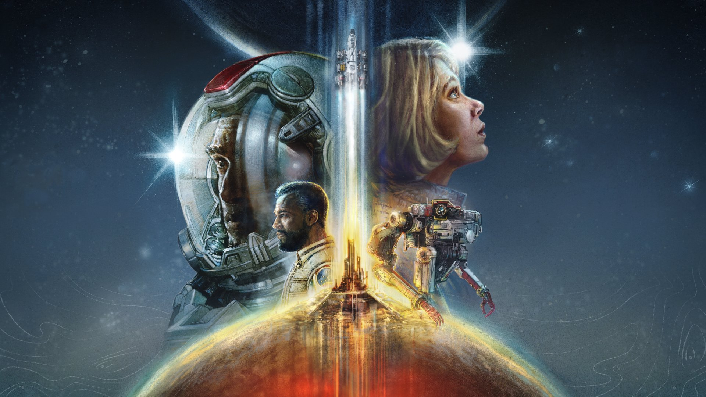
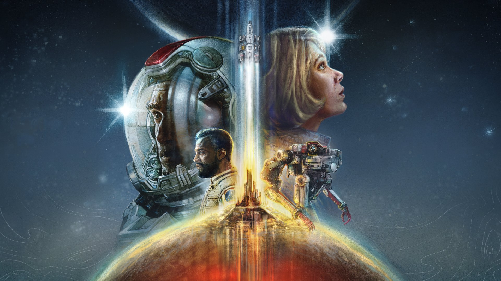

Disfruta de la consola más potente del mundo con Xbox Series X. Rendimiento de nueva generación, tiempos de carga rápidbdfsx
Regresa el Jefe Maestro con una campaña épica y un multijugador gratuito lleno de acción.
Explora un mundo abierto vibrante inspirado en México con los autos más espectaculares y realistas.
Continúa la saga de guerra contra los Locust con gráficos espectaculares y acción cooperativa intensa.
Surca los cielos con un realismo impresionante y experimenta el mundo desde una nueva perspectiva.
Explora el espacio en una aventura épica de ciencia ficción del estudio creador de Skyrim y Fallout.
La historia del juego toma lugar en el planeta Reach durante el verano del año 2552. Después de perder a Noble Seis (quien murió al no poder escapar de la explosión de una bomba en una nave Covenant), el Equipo Noble se encuentra únicamente integrado por cinco Spartans, por lo que el reemplazo de Noble Seis es enviado a Reach para formar parte del Equipo. Tras su llegada, se encuentra con el resto de los integrantes en medio de una comunicación con el Coronel Urban Holland por problemas con la Estación de Comunicadores de Visegrad. Rápidamente, Noble Seis es enviado a su primera misión en donde se encuentran con múltiples cadáveres de soldados y civiles que habían sido asesinados por el fuego de Plasma. Tras interrogar a algunos sobrevivientes, los Spartans tienen el primer contacto con el Covenant, los causantes de la pérdida de comunicaciones. Continuamente, Noble acude para eliminar a las fuerzas hostiles que atacaban a un grupo de Soldados que habían sobrevivido al primer enfrentamiento; tras la evacuación de estos, los Spartans se dirigen a la Estación de Repetidores, donde encuentran el cuerpo del científico Laszlo Sorvad (quien había sido asesinado anteriormente), su hija y otro soldado sobreviviente. Durante la examinación de los daños, el Equipo Noble es atacado por un grupo de Zealots Halo reach gif Gif de la Campaña que logran huir de su inexitosa emboscada. Sin embargo, estos son asesinados por Noble Seis y Jorge-052 al enfrentarse directamente a los humanos. Inmediatamente después de reparar las comunicaciones, Carter-A259 avisa al coronel de la presencia Covenant en el planeta por lo que finalmente el Plan de Invierno es puesto en marcha para contrarrestar el avance del Covenant. Conforme pasa el tiempo, el Covenant comienza a establecerse alrededor del planeta hasta encontrar la Base Sword, la cual es atacada debido a que lo alienígenas necesitaban la información que allí se escondía para crear estrategias en contra del UNSC. Finalmente, Catherine-B320 y el SPARTAN-B312 son enviados para apoyar a los Soldados que intentaban defender la base. Cuando los hostiles logran ser eliminados, ambos Spartans continúan su camino para activar las Antenas de Comunicaciones y así, establecer contacto con el Alto Mando. Tras lograrlo, Carter pide el apoyo de los dos primeros y estos se dirigen inmediatamente a la Base Sword de nuevo, pero no sin antes enfrentarse a una resistencia con armamento pesado, entre otras tropas Covenant. Una vez en la Instalación de la ONI, el Equipo Noble se dispone a eliminar las tropas terrestres para luego despejar el cielo de Vehículos Aéreos hostiles y permitir a los Longsword guiar el ataque de las Armas Super MAC y así destruir una Corbeta estacionada en la superficie de Reach. Reach historia unsc Enfrentamiento entre un Convoy del UNSC y fuerzas aéreas del Covenant El 11 de Agosto, Jun-A266 y Noble Seis son enviados por Kat para una misión de reconocimiento en la zona oscura. En su recorrido, los Spartans se topan con un pequeño grupo de civiles sobrevivientes que se enfrentaban a las Tropas enemigas. La misión resultó en el descubrimiento de una establecimiento Covenant que preparaba la Invasión del Planeta. Al día siguiente una fuerza de contraataque del UNSC emprende una misión que inicia al detonar una carga de Detonación Remota en una Base Eléctrica que Jun había colocado durante la misión de reconocimiento. Enseguida, el Convoy humano es atacado por fuerzas aéreas y terrestres, por lo que son obligados a suspender la misión momentáneamente debido a las grandes pérdidas por parte de los Humanos. Como era de esperarse, los Spartans Kat y Seis sobreviven al ataque y logran eliminar a una resistencia abastecida en territorio de Viery, con esto un Pelican les proporciona un método de transporte para continuar con la misión y así destruir las baterías Anti-Aéreas, permitiendo a las Fragatas UNSC Grafton y Saratoga acercarse a la superficie del planeta para proporcionar apoyo aéreo a las tropas del UNSC que se enfrentaban a un gran batallón del Covenant conformado por Scarabs y otros vehículos terrestres. Conforme avanzaban, el Equipo Noble logra desactivar los Escudos de la Torre enemiga que con su destrucción por parte de las Fragatas, revelaría la existencia del Supercarguero Long Night of Solace. Sabrey fragata Ejecución de la Operación: GANCHO que resulta como una cara victoria para el UNSC Con este descubrimiento, el Alto Mando pone en marcha la Operación: UPPER CUT en la que un Equipo de cazas Sabre se dirige al espacio profundo para capturar la Ardent Prayer y plantar un Motor Desliespacial que serviría como una bomba improvisada que destruiría ambas naves enemigas. Sin embargo, el éxito de la misión fue pagada con la vida de Jorge-052 y varios soldados del Ejército del UNSC. Por otra parte, las cosas se complican cuando una gran flota llega a la órbita de Reach. Para salvarse de la explosión, Noble Seis es arrojado de la Corveta hasta la superficie del planeta, aterrizando en las afueras de Nueva Alejandría. Jorge-052 Jorge, quien se sacrificaría en la Operación: UPPER CUT Tras recuperar la conciencia, el Spartan que se encuentra lesionado del brazo izquierdo emprende su camino a la ciudad en donde se encuentra con múltiples tropas de Grunts Suicidas que planeaban frustrar su avance, sin embargo, este logra sobrevivir a los ataques y se adentra más en la ciudad hasta toparse con un grupo de Soldados y civiles que estaban siendo atacados por los Brute. Finalmente, Noble Seis se une a las fuerzas aliadas, y tras limpiar algunas zonas, logra activar los misiles defensivos del UNSC que dañarían una Nave Covenant estacionada sobre la ciudad, lo cual, permitiría el escape de los aviones comerciales cargado con civiles. Por otra parte, Catherine-B320 logra contactar con Noble Seis para reunirse con el Equipo de Spartans sobrevivientes, para así neutralizar los inhibidores de comunicación que el Covenant había colocado en los edificios más importantes de la ciudad. La destrucción de estos dispositivos permite al Equipo Noble comunicarse con el Coronel Urban Holland para solicitar una nueva tarea, sin embargo, en ese momento la radiación comienza a aumentar notoriamente debido a que los hostiles habían comenzado a cristalizar Reach. En un intento por refugiarse, Kat es asesinada por un Elite Zealot, al penetrarle la cabeza con un Rifle Aguijoneador. Poco después, el Equipo Noble surge de su refugio esperando a que un Pelican los recoja, Carter lleva el cuerpo de Kat en sus brazos. Kat reach kill Kat, asesinada cuando trataba de refugiarse con el resto del equipo Official - Carter Carter dando su vida al detener un Scarab Luego, el Equipo Noble es enviado a destruir la Base Sword de la ONI en poder del Covenant, para eso se envía a Noble Seis con un grupo de ODST para destruir unos antiaéreos y abrir paso al resto del equipo Noble y a las fuerzas del UNSC. Una vez dentro de la Base no encuentran los explosivos y en lugar de eso una cámara con un ascensor secreto que los condujo a una excavación de la ONI. Esa excavación era el laboratorio secreto de la Doctora Halsey que estaba haciéndole unos ajustes a la IA Cortana y por eso les pide que defiendan la entrada del laboratorio al Equipo Noble. Después de vencer a los invasores el equipo entra al laboratorio y descubre a Cortana, que ha elegido a Noble Seis para que la llevara al Crucero Pillar of Autumm. Carter decide que Jun acompañe a la doctora a una base del UNSC donde estará segura mientras el resto del equipo va a entregar a Cortana al Comandante Keyes. Mientras están en la entrega, varios Emile's Profile Emile moriría a manos de un Zealot, no sin antes asesinar al último Banshees y Phantoms están atacando el Pelican donde van y a Emile y Noble 6 les toca saltar de la nave mientras Carter distrae a los enemigos. Después de haber vencido a varios enemigos y haberse escapado de un tanque Scarab a Emile y a Noble Seis les toca entregarse a un Scarab pero antes de poder hacerlo Carter se sacrifica estrellando el Pelican donde va con el tanque Scarab para que ellos puedan pasar. Ya llegando al crucero y después de haber vencido a varios enemigos, Noble Seis le pudo entregar a Cortana al Comandante Keyes, pero cuando se va a subir para abandonar el planeta, se Noble-6 Noble Seis decidió quedarse en Reach, para siempre... ve a varios Elites enfrentando a Emile mientras que un Zealot por atrás le atraviesa una espada de energía, y antes de morir Emile mata al Zealot cayendo al suelo y muriendo, después de ver eso Noble Seis decidió utilizar un cañón MAC para derribar al crucero que le estorbaba el paso al Covenant para salir y lograr escapar. Después de lograrlo Noble Seis decide quedarse a luchar contra todas la oleadas de enemigos que pueda derrotar, mientras que se le va rompiendo el casco, cuando ya varios Elites estaban luchando con él se quita el casco y se ve matando a varios, aunque se corta la escena antes de poder ver más. Tiempo después de todo lo ocurrido se oye la voz de la Dra. Halsey narrando un corto monólogo en honor a Noble Seis en donde ve el casco de Seis en un Reach restaurado y todo termina.
Explora el espacio en una aventura épica de ciencia ficción del estudio creador de Skyrim y Fallout.